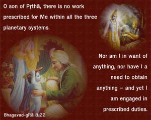
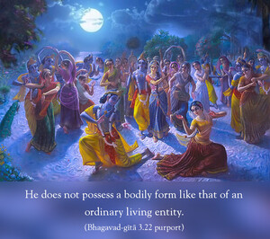
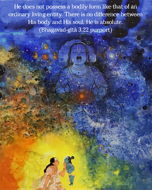
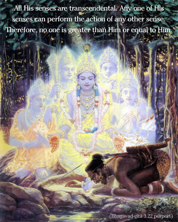
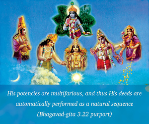
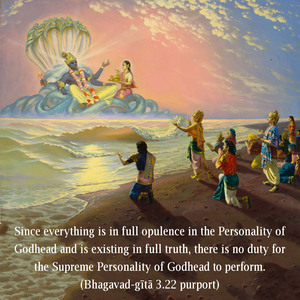

O son of Pṛthā, there is no work prescribed for Me within all the three planetary systems. Nor am I in want of anything, nor have I a need to obtain anything – and yet I am engaged in prescribed duties.







The Supreme Personality of Godhead is described in the Vedic literatures as follows:
tam īśvarāṇāṁ paramaṁ maheśvaraṁ
taṁ devatānāṁ paramaṁ ca daivatam
patiṁ patīnāṁ paramaṁ parastād
vidāma devaṁ bhuvaneśam īḍyam
na tasya kāryaṁ karaṇaṁ ca vidyate
na tat-samaś cābhyadhikaś ca dṛśyate
parāsya śaktir vividhaiva śrūyate
svābhāvikī jñāna-bala-kriyā ca
“The Supreme Lord is the controller of all other controllers, and He is the greatest of all the diverse planetary leaders. Everyone is under His control. All entities are delegated with particular power only by the Supreme Lord; they are not supreme themselves. He is also worshipable by all demigods and is the supreme director of all directors. Therefore, He is transcendental to all kinds of material leaders and controllers and is worshipable by all. There is no one greater than Him, and He is the supreme cause of all causes.
“He does not possess a bodily form like that of an ordinary living entity. There is no difference between His body and His soul. He is absolute. All His senses are transcendental. Any one of His senses can perform the action of any other sense. Therefore, no one is greater than Him or equal to Him. His potencies are multifarious, and thus His deeds are automatically performed as a natural sequence.” (Śvetāśvatara Upaniṣad 6.7–8)
Since everything is in full opulence in the Personality of Godhead and is existing in full truth, there is no duty for the Supreme Personality of Godhead to perform. One who must receive the results of work has some designated duty, but one who has nothing to achieve within the three planetary systems certainly has no duty. And yet Lord Kṛṣṇa is engaged on the Battlefield of Kurukṣetra as the leader of the kṣatriyas because the kṣatriyas are duty-bound to give protection to the distressed. Although He is above all the regulations of the revealed scriptures, He does not do anything that violates the revealed scriptures.